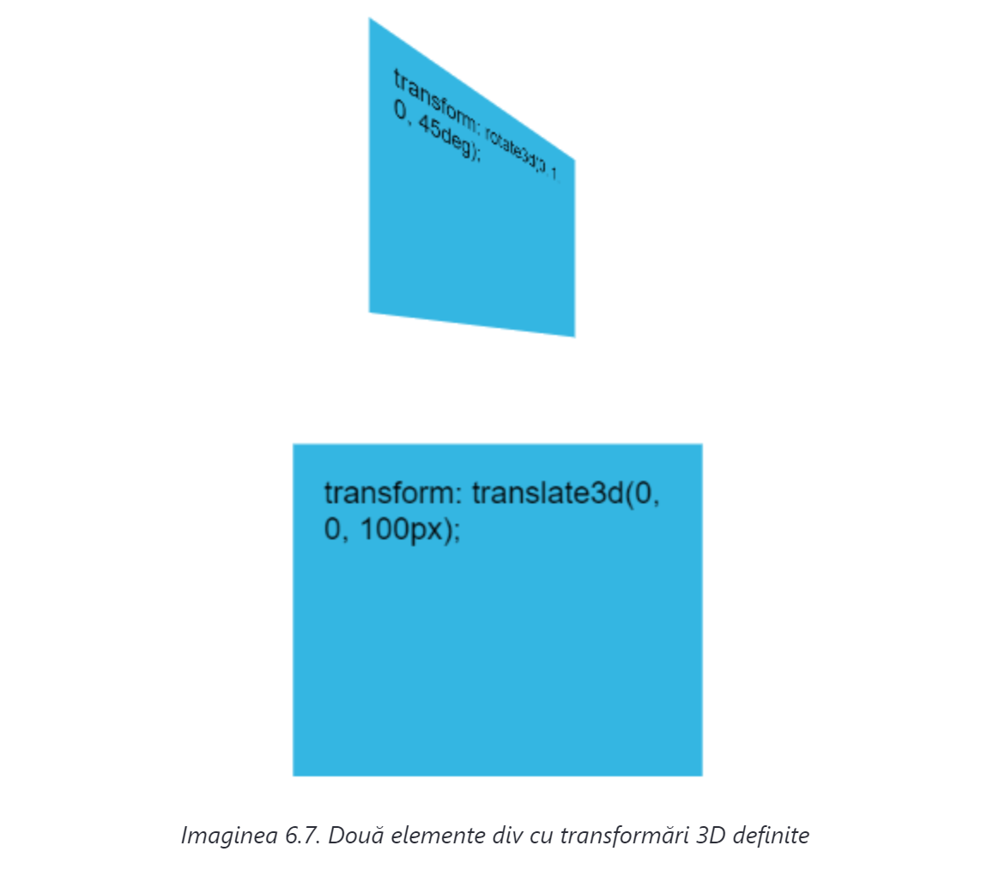
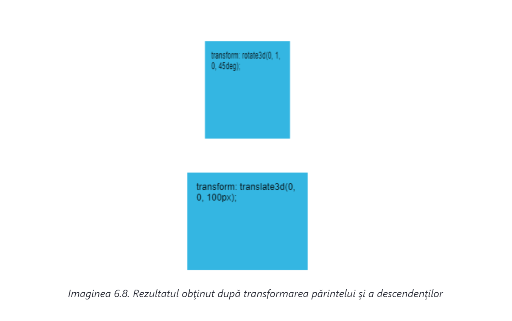

O situaţie foarte interesantă poate apărea în cazul în care o anumită transformare se aplică pe elementul care deţine deja elemente transformate cu transformările 3D. Această situaţie este ilustrată prin următoarea structură HTML:
<div id="main-container">
<div id="boxes-container">
<div id="div-1" class="box"></div>
<div id="div-2" class="box"></div>
</div>
</div>
Aceste elemente sunt stilizate în felul următor:
box {
width: 180px;
height: 140px;
background-color: #33B6E2;
margin: 100px auto;
padding: 16px;
}
#main-container {
perspective: 300px;
}
#div-1 {
transform: rotate3d(0, 1, 0, 45deg);
}
#div-2 {
transform: translate3d(0, 0, 100px);
}
Observăm că două elemente div, aflate mai adânc în structura prezentată (div-1 şi div-2), sunt transformate cu funcţiile rotate3d() şi translate3d(). În acest fel obţinem transformarea ca în imaginea 6.7.
Obținem o reprezentare cu totul diferită dacă transformăm elementul părinte (boxes-container) al celor două div-uri tocmai prezentate (imaginea 6.8.):
#boxes-container {
transform: translate3d(100px, 0, 0px);
}

În imaginea 6.8. vedem că după transformarea elementului părinte (boxes-container) apare un fenomen ciudat pe descendenţii săi. Aceștia nu mai arată ca mai devreme, ci sunt aliniaţi cu planul părintelui lor. Pentru ca transformările definite pe ei să fie prezentate adecvat, adică ca să le păstrăm spaţiul 3D, trebuie să folosim proprietatea transform-style.
Proprietatea transform-style poate avea două valori, şi anume:
Era de aşteptat ca valoarea implicită a proprietăţii transform-style să fie flat, prin care obţinem efectul tocmai ilustrat în imaginea 6.8. Ca să păstrăm spaţiul 3D al descendenţilor, ca valoare a proprietăţii transform-style trebuie să setăm preserve-3d.
transform-style: preserve-3d;